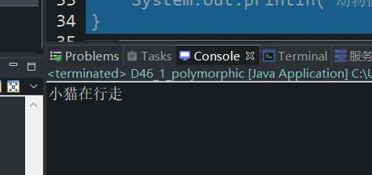

原文连接:https://www.cnblogs.com/ruigege0000/p/11762388.html
一、多态的语法
1.关于多态中涉及到几个概念
（1）向上转型（upcasting)
子类型转换为父类型，又被称为自动类型转换
（2）向下转型（downcasting)
父类型转换为子类型，又被称为强制类型转换（需要加强制类型转换符）
（3）无论是向上转型还是向下转型，它们之间都必须有继承关系，否则编译是不通过的。
（4）Java中允许语法：子类型向父类型及逆行转化
2.过程：
（1）java程序分为编译和运行阶段
（2）先分析编译阶段，再分析运行阶段，编译无法通过，根本是无法运行的；
（3）编译阶段检查a2这个引用的数据类型为Animal46，由于Animal.class字节码中有move()方法，所以编译通过了，这个过程我i们称为静态绑定，编译阶段绑定，只有静态绑定成功后才会有后续的运行。
（4）程序运行阶段，JVM堆内存中真实创建的对象是Cat对象，那么以下程序在运行阶段一定会调用Cat对象的move()方法，此时发生了程序的静态绑定。运行阶段绑定。
（5）无论是Catc46类有没有重写move方法，运行阶段一定会调用的是Cat对象的move方法，因为底层真实的对象就是Cat对象。
（6）父类型引用指向子类型对象这种机制导致了存在编译阶段绑定和运行阶段绑定两种不同的形态/状态，这种机制可以成为一种多态语法机制。
package com.bjpowernode.java_learning;
public class D46_1_polymorphic {
public static void main(String[] args) {
//下面使用多态语法机制
Animal46 a2 = new Cat46();//一个Animal46类型的引用指向了Cat46对象
a2.move();//底层是Cat46对象，如果这个方法没重写，那么就会调用Animal的原始move方法
//a2.catchMouse();//分析这行程序为什么不能调用？
//因为编译阶段编译器检查a2的类型是Animal类型，从Animal.class字节码文件之中查找catchMouse
//方法，最终没有找到该方法，导致静态绑定失败，没有绑定成功，也就是编译失败，更别谈运行了。
/**
* Animal和Cat之间存在继承关系，Animal是父类，Cat是子类
* Cat是Animal合理的
* new Cat()创建的对象类型是Cat，a2这个引用的数据类型是Animal，可见它们进行了类型转换
* 子类型转换为父类型，称为向上转型。
*/
}
}
class Animal46{
public void move() {
System.out.println("动物们再行走");
}
}
class Cat46 extends Animal46{
public void move() {
System.out.println("小猫在行走");
}//重写函数
//下面是小猫类特有的函数
public void catchMouse() {
System.out.println("小猫是会抓老鼠的");
}
}
class Bird46 extends Animal46{
public void move() {
System.out.println("小鸟在飞翔");
}
}

二、源码：
D46_1_polymorphic.java
地址：
https://github.com/ruigege66/Java/blob/master/D46_1_polymorphic.java
2.CSDN：https://blog.csdn.net/weixin_44630050（心悦君兮君不知-睿）
3.博客园：https://www.cnblogs.com/ruigege0000/
4.欢迎关注微信公众号：傅里叶变换，个人公众号，仅用于学习交流，后台回复”礼包“，获取大数据学习资料